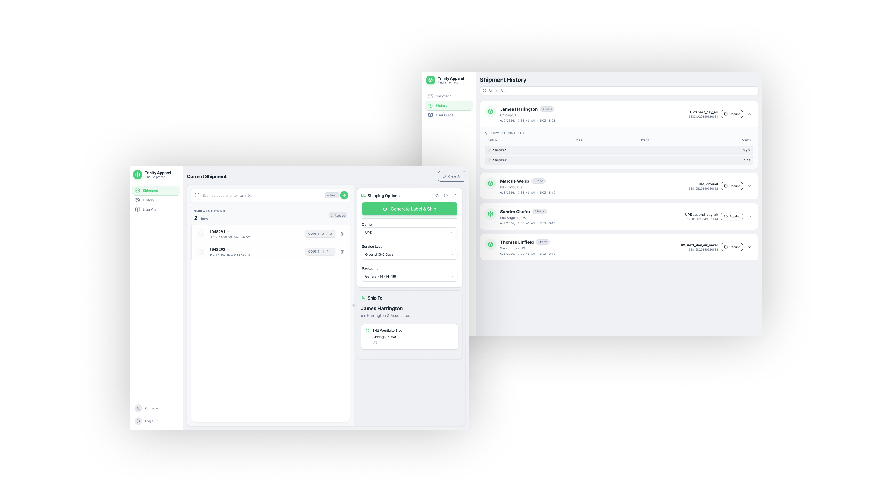
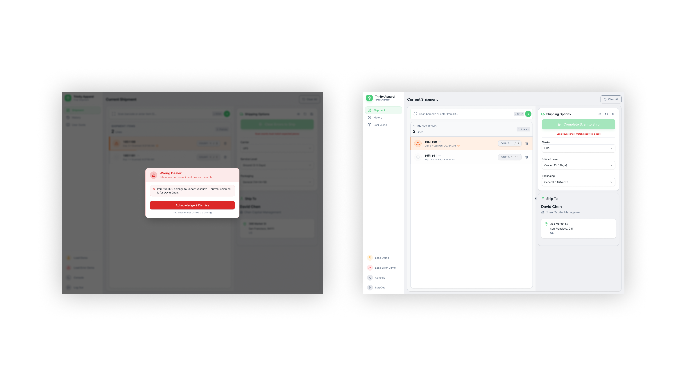

Executive summary
2–3
Taps to complete a full shipment
Down from 8+ in the previous system
30 min
Time to onboard a new worker
Down from a half-day training session
↓ IT
Workers self-diagnose errors via console
Fewer escalations, more autonomy
Warehouse workers at Trinity Apparel ship hundreds of packages a day. The interface they were using had never been reconsidered for gloves, mounted tablets, or a standing workflow. Error feedback was opaque. Printer switching required a four-click detour. Wrong packages shipped silently.
I redesigned and rebuilt the tool from the ground up — not as a visual refresh, but as a rethinking of the entire interaction model. The result ships in production. Workers adopted it in the same week it launched. No wrong-address packages have shipped since the mismatch detection went live.
My role
What I owned
End-to-end design and front-end implementation. Discovery research, UX flows, Figma prototypes, React components, QA, and production handoff. I worked directly with warehouse workers during research and with engineers during build.
What I collaborated on
Printer API integration, USB scanner event handling, label generation, and the address validation logic that powers the mismatch detection. The backend already existed — the question was how the interface should respond to what it returned.
The challenge
The warehouse already had a shipping system. Workers knew how to use it. The problem was that it was built for a desk, and nobody at Trinity ships from a desk.
Workers stand at tablets mounted on carts or walls, wearing thick gloves, often holding a package in one hand. The old interface treated that context as incidental. Tap targets designed for a mouse cursor. Printer selection buried in a settings menu. Scan confirmation that required you to look carefully at a small status indicator to know if it registered. When something went wrong, the interface said nothing useful. The worker called IT.
The complaint that triggered this project was direct: the system was clunky and outdated. That's not a UX critique. That's an operations problem with a design solution.
Physical environment
- Workers wear gloves — precision tapping isn't possible
- Tablets mounted on carts or walls, not held in hand
- Standing workflow, often holding packages
- Variable lighting, glare, ambient noise
Operational stakes
- Hundreds of scans per shift — every friction point multiplies
- Speed is non-negotiable; workflow cannot pause
- Wrong package shipped = real cost, real customer impact
- 4 carriers, different label sizes, frequent printer switching
Discovery
I spent time on-site during peak shipping hours. Not doing structured interviews — watching. The things that matter in a warehouse don't come up in a conference room.

On-site observation during peak hours. I was looking for the behaviors workers couldn't articulate — the habits that formed around the interface's failures.
The double-tap to verify a scan that may or may not have registered. The detour to a desktop terminal just to switch printer settings. The resigned shrug when an error screen appeared and there was nothing to do except call for help. These weren't complaints workers would file. They were just the cost of doing the job.
Key insight
The workflow itself was sound. Pick, scan, print, ship, bin — workers had internalized it completely. They didn't need a better workflow. They needed an interface that stopped fighting the one they already had.
That reframe changed the scope of the project. This wasn't about redesigning how the warehouse operates. It was about making the interface invisible — so workers could do in 2 taps what they were already doing in 8.
Product strategy
I needed one question that could act as a filter for every decision in this project. Not "is this intuitive?" — intuitive is the wrong bar when the person using the interface is standing, moving, often holding a box, wearing thick gloves, and reading a mounted tablet at arm's length.
The question became: does this survive a glove and a moving cart?
Touch-first wasn't an accessibility checkbox or a responsive design consideration. It was the product strategy. Every screen, every control, every piece of feedback had to work with a gloved finger in ambient light in the middle of a shift. If it didn't, it wasn't done.
"The previous interface wasn't broken. It just assumed conditions that don't exist in a warehouse. Those assumptions were the product problem."
The decision to rebuild rather than iterate was deliberate. A refresh would have produced a cleaner-looking version of the same broken interaction model. The problem wasn't visual — it was structural. Starting from the environment rather than from the existing design meant the result could actually serve it.
Information architecture
The warehouse workflow has five steps and they never change. Pick. Scan. Print. Ship. Confirm. I mapped the interface directly to that sequence — one step per screen state, no extra navigation, nothing buried.
Step 2 — Validate — is the critical gate. Address mismatch stops the flow here before anything else moves.
Three input methods exist in the system, ordered by priority: USB scanner, camera, manual entry. The primary path is optimized for speed. The fallbacks ensure the workflow is never blocked by a dead scanner or a damaged barcode. The debug console lives at the bottom of every screen: collapsed by default, one tap to expand, showing live API responses and printer status.
UX decisions
Four decisions defined the product. Each one had a real argument against it — that's what made them worth making explicitly.
01
60px minimum touch targets. The primary scan button is 100×100px.
The pushback: it looked oversized on the mockup. Engineers asked if it was intentional.
Gloved fingers are imprecise. The cost of a mis-tap in a shipping workflow isn't a wrong selection you undo — it's a package that leaves the building with the wrong label. Table rows are 80px tall. Every tappable element is deliberately oversized. The visual weight is the point.
02
Printer selector on the main screen. Always visible.
The previous system: four clicks into settings, four clicks back. Workers did this dozens of times per hour across four carriers.
I mapped task frequency against interface depth and found the worst possible combination: the most frequent action buried at the deepest level. Moving printer selection to a persistent dropdown on the main view eliminated an entire category of delay — not by making the action faster, but by removing the navigation that surrounded it.
03
Three input methods. One primary. Zero dead ends.
The original interface had one input method. If the scanner failed, the shift stopped.
USB scanner is the primary path — fastest, most reliable. Camera if it fails. Manual entry if the barcode is damaged. Workers don't make this choice consciously. The fallback is just there. Resilience design in a warehouse means the workflow degrades gracefully instead of stopping.
04
A toggle-able console. Hidden by default.
Stakeholder objection: "Workers don't need to see API responses. It'll confuse them."
The console isn't for debugging — it's for autonomy. When a scan doesn't register or a print job fails, workers tap the console and see exactly what happened. They can describe it. Often they can fix it. The console is hidden by default because it's never needed when things work. It's there when they don't. This became the most-praised feature post-launch.
UI decisions
The visual language had one job: reduce cognitive load in a loud, bright, moving environment. Status had to be instantly legible from two feet away. Controls had to communicate affordance without detailed inspection.
8+
Taps to complete a shipment in the previous interface
2–3
Taps to complete the same shipment

The main scanning view. Printer selector always visible. The scan button is 100×100px. Status feedback appears immediately on scan registration.

Error state with the debug console expanded. Workers can read exactly what happened — and in most cases, act on it themselves.
Suggested visual
Annotated diagram: a gloved hand silhouette overlaid on the scan button showing finger contact area vs. target size — making the case that 100px isn't oversized, a bare-fingertip target would be undersized for this context.
Engineering collaboration
I built the React components and owned the front-end implementation. The backend APIs — scanner event streams, printer queues, label generation — already existed. My job was designing how the interface responded to them.
USB scanner integration
Scanner events fire as keyboard inputs at the document level. The interface has to distinguish scanner input from manual typing — different timing characteristics, different response. Getting this wrong means workers can't type and scan in the same session.
Printer selection state
Printer preference persists per session. If a worker moves to a different cart, the interface remembers their last-used printer rather than resetting to a system default. This required careful decisions about where state lives.
Audio feedback
The address mismatch alert fires a sound before it renders anything visual. In a loud warehouse, eyes-up time is valuable. The audio response is the first signal — visual confirmation follows within 200ms.
Live console stream
The console renders a rolling log of API calls, scanner events, and printer responses — truncated lines, color-coded by event type, most recent at top. Not a developer tool; an operator readout.
The most important engineering conversation was about failure modes. We mapped every scenario where the interface could be in an ambiguous state — scanner connected but not responding, print job queued but printer offline, address check timing out — and made explicit decisions about what to show in each. That work never appears in a screenshot. It's the difference between software that feels solid and software that just looks clean.
Implementation · The mismatch problem
The most consequential feature we built wasn't in the original brief. It came from one observation during research: a worker scanned a garment, printed a label, and dropped it in the bin — for the wrong dealer. The address didn't match the order. Nobody caught it until the package was already in a truck.
The scenario
A worker is processing a shipment for Robert Vasquez. They scan the next garment. The garment belongs to David Chen — a different dealer at a different address. The system sees the mismatch immediately: the garment's assigned dealer doesn't match the active shipment's destination.
System response
Sound alert fires first. Process hard-blocks. The worker cannot print a label, cannot confirm, cannot proceed. The interface presents the mismatch explicitly — which garment was scanned, which dealer it belongs to, what the active shipment expects. The block does not clear until the conflict is resolved.
The decision to hard-block — rather than warn and allow override — was deliberate. A warning that can be dismissed becomes a checkbox. A hard block communicates that the system means it. Workers learn quickly that the alert isn't an interruption; it's protection.
The audio fires before the screen updates. That 200ms of lead time changes the experience of being stopped — it doesn't feel like a crash, it feels like a catch.
Results
2–3
Taps to complete a full shipment, down from 8+ in the previous interface
30 min
New worker onboarding time, down from a half-day training session
0
Wrong-address packages shipped since mismatch detection launched
"When something goes wrong, I can fix it myself now."
Warehouse worker, post-launch feedback
Worker adoption was immediate — no retraining beyond a 30-minute walkthrough, down from the previous half-day onboarding. The 30-minute figure reflects the interface more than it reflects the training. When a tool matches the way people already work, learning it takes less time because there's less to unlearn.
Reflection
This project worked because the research was physical. Watching workers in the warehouse surfaced things that would never appear in a stakeholder brief or a user survey. If I had skipped on-site observation, I would have designed for a version of the problem that didn't match the actual environment.
Test prototypes in the actual environment, not on a laptop. I finalized most visual decisions before testing in the warehouse. Lighting, glare, and standing distance change what's readable in ways that a screen in a conference room doesn't show. I'd run a physical prototype session — tablet mounted, gloves on, in the space — before any visual decisions are locked.
Status communication should be redundant by design. The mismatch alert uses sound and visual feedback together. Most other status indicators use only color. In a warehouse environment, color alone isn't reliable — lighting changes, eyes are elsewhere. Shape and icon backups should be the default, not an afterthought.
Instrument analytics from day one. We don't know which part of the flow takes longest, which errors appear most often, or where workers tap off-sequence. Building the analytics hooks was always "next sprint" — and it stayed there.
Key takeaways